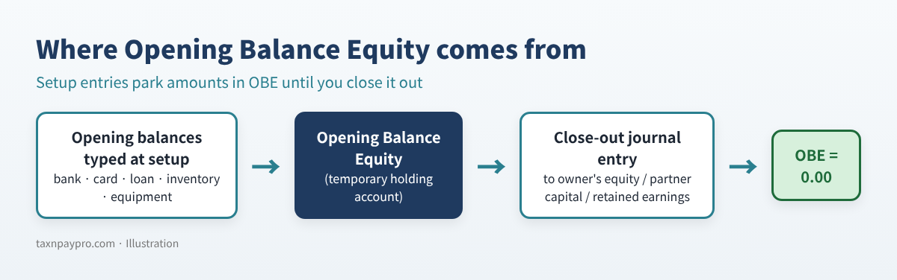
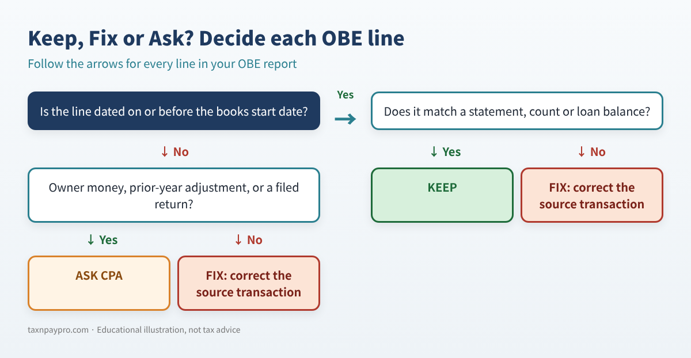
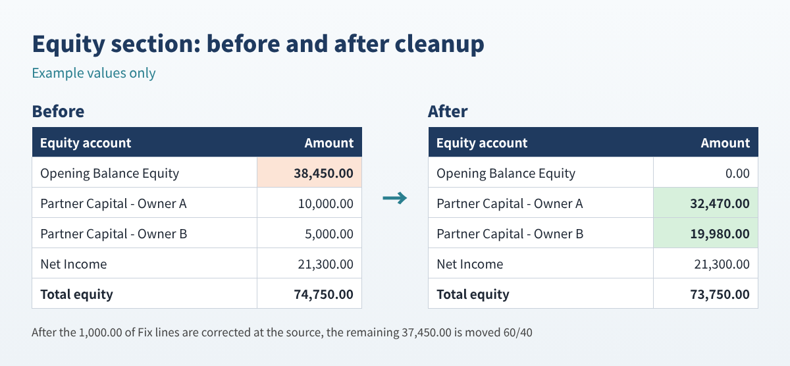

How to Clean Up Opening Balance Equity in QuickBooks: Find It, Fix It, Close It
↓ Get the free Excel + PDF kit for this article
You finished setting up your books, maybe years ago, and the Balance Sheet still shows a line called Opening Balance Equity. Your CPA asks about it every spring. You are not sure what is inside it, and every forum answer says "just make a journal entry" without telling you which one, or whether the balance is even right.
This guide walks you through the whole cleanup in plain steps: find out what is in the account, fix the parts that are wrong, and move the rest to the right equity account. You can do all of it with a report export and a spreadsheet. Steps are shown for both QuickBooks Desktop and QuickBooks Online.
Who this is for: small business owners and bookkeepers whose Balance Sheet shows a non-zero Opening Balance Equity (OBE) after setup, a conversion, or years of "plug" entries.
What Opening Balance Equity is (in one minute)
When you type an opening balance while creating a bank, credit card, loan or asset account, or enter a starting quantity for an inventory item, the software needs the other half of the entry. It puts that half in Opening Balance Equity, a temporary holding account.
That is normal on day one. But OBE is not a real owner's equity account. Once setup is finished, the balance is normally moved into proper equity, so a clean Balance Sheet shows OBE at 0.00.

Why the balance stays
- Opening balances were entered on the wrong date, or twice.
- Someone posted a journal entry or deposit to OBE after the start date to "make it balance."
- A bank opening balance was edited after the account was reconciled.
- Owner money or old customer/vendor balances were parked there.
Step 1: Export every line in the OBE account
QuickBooks Desktop
- Open Lists > Chart of Accounts and click once on Opening Balance Equity.
- Click Reports at the bottom of the window, then QuickReport. Set Dates to All.
- Click Excel > Create New Worksheet.
QuickBooks Online
- Open the Chart of accounts. If you cannot find it in the menu, type "Chart of accounts" in the search bar at the top.
- Find the Opening Balance Equity row. In the Action column, choose Account history or Run report (the label depends on the account and version).
- Set the date range to all dates and use the Export icon to download to Excel.
First check: add up the Amount column. It should equal the OBE balance on your Balance Sheet. If it equals the same number with the opposite sign, the export uses the other sign convention; multiply the column by -1 and continue.
Step 2: Decide each line: Keep, Fix or Ask
Add a column called Decision next to your export. Then go line by line using the decision tree below.

Here is a real-looking example with eight lines (example values only):
| Date | Type | Other account (Split) | Amount | Decision |
|---|---|---|---|---|
| 12/31/2025 | Deposit | Business Checking | 12,500.00 | Keep |
| 12/31/2025 | Credit Card Charge | Business Credit Card | (3,200.00) | Keep |
| 12/31/2025 | Inventory Adjust | Inventory Asset | 8,150.00 | Keep |
| 12/31/2025 | General Journal | Equipment | 24,000.00 | Keep |
| 12/31/2025 | General Journal | Equipment Loan | (9,000.00) | Keep |
| 03/15/2026 | General Journal | Business Checking | 1,250.00 | Fix |
| 05/02/2026 | Deposit | Business Savings | 5,000.00 | Ask CPA |
| 12/31/2025 | Invoice | Accounts Receivable | (250.00) | Fix |
Table 1. Example OBE report. Total = 38,450.00, which matches the Balance Sheet.
Spreadsheet formulas you can type
Assume dates are in column A, amounts in D and decisions in E, rows 2 to 200, and the books start date in cell H1:
| What you want | Formula |
|---|---|
| Total of all lines | =SUM(D2:D200) |
| Lines dated after the start date | =COUNTIFS(A2:A200,">"&H1) |
| Total marked Keep | =SUMIFS(D2:D200,E2:E200,"Keep") |
| Total marked Fix | =SUMIFS(D2:D200,E2:E200,"Fix") |
| Amount to close out | =SUM(D2:D200)-SUMIFS(D2:D200,E2:E200,"Fix") |
Table 2. Five formulas do most of the work.
In the example: Keep = 32,450.00, Fix = 1,000.00 (the 03/15 plug entry and the A/R line), Ask CPA = 5,000.00 (the "owner money" deposit). The amount to close out is 38,450.00 - 1,000.00 = 37,450.00.
How to fix a Fix line
- Desktop: double-click the line in the QuickReport to open the transaction, change the account or date, and save.
- Online: click the line in the report to open it, change the account (or date), and select Save.
- If the line is reconciled, editing it changes past reconciliations. Write down the statement balance first, or ask your accountant.
- Re-export the report afterwards. The Fix lines should be gone from OBE.
Step 3: Post the close-out entry
Where the remaining balance goes depends on your entity type. Confirm with your CPA, especially for corporations, because the books should agree with the balance sheet on your filed return.
| Entity type | Usual target account |
|---|---|
| Sole proprietor / single-member LLC | Owner's Equity (or Owner's Investment) |
| Multi-member LLC / partnership | Each partner's capital account (by agreement) |
| S corporation / C corporation | Retained Earnings or Paid-in Capital: ask your CPA |
For the example partnership split 60/40, the entry dated on the books start date is:
| Account | Debit | Credit |
|---|---|---|
| Opening Balance Equity | 37,450.00 | |
| Partner Capital - Owner A | 22,470.00 | |
| Partner Capital - Owner B | 14,980.00 | |
| Total | 37,450.00 | 37,450.00 |
Table 3. Close-out journal entry (example values). If OBE were negative, debits and credits would swap.
- Desktop: Company > Make General Journal Entries.
- Online: + New > Journal entry. Same lines, same date, then Save.
- Run the Balance Sheet as of that date. OBE should show 0.00.

Lock the period
Desktop: Edit > Preferences > Accounting > Company Preferences > Set Date/Password. Online (per Intuit's "Lock your books" help article): Settings > Account and settings > Advanced > Accounting > Edit, turn on Close the books, enter the closing date, choose a warning or password option, and Save. You need to be a primary or company admin.
Common mistakes
- Closing OBE to equity before fixing the wrong lines. The error just moves into equity.
- Using today's date for the close-out entry instead of the books start date (ask your CPA if returns are already filed).
- Splitting by ownership % when the partnership agreement allocates capital differently.
- Editing reconciled opening balances without noting the statement balance first.
- Leaving owner contributions in OBE instead of recording them as contributions.
FAQ
Can I just delete Opening Balance Equity?
No. It is a system account that the software uses for opening balances. The goal is a zero balance, not deleting the account.
Will this change my taxes?
Moving OBE between equity accounts does not change income or expenses. Fixing a wrong line might, if the line was really income or expense. Review those with your tax preparer.
Why does OBE show up again after I cleared it?
Something added a new opening balance: a new bank account with an opening balance, a new inventory item with quantity, or an edited beginning balance. Re-run the report and check the newest lines.
My OBE is negative. Is that wrong?
Not necessarily. A large loan or credit card opening balance can make it negative. The same steps apply; the close-out entry simply credits OBE.
Checklist
- ☐ Export OBE (all dates) and confirm the total matches the Balance Sheet
- ☐ Mark every line Keep, Fix or Ask CPA
- ☐ Correct Fix lines at the source transaction
- ☐ Get answers for Ask CPA lines
- ☐ Post the close-out entry; debits equal credits
- ☐ Balance Sheet shows OBE = 0.00; set the closing date and back up
Want it done faster?
You can download the ready-made Opening Balance Equity Cleanup Workbook for free in the Free kit download box below: the Excel workbook plus a PDF guide, no sign-up needed.
This article is educational only and is not tax, legal or accounting advice; results depend on your records. Menu names can change. QuickBooks is a registered trademark of Intuit Inc.; not affiliated with or endorsed by Intuit.
Sources: Intuit, "Lock your books in QuickBooks Online" (help article, updated 2026-09-15): https://quickbooks.intuit.com/learn-support/en-us/help-article/close-books/close-books-quickbooks-online/L59LelyPM_US_en_US · QuickBooks Community discussions on clearing OBE: https://quickbooks.intuit.com/community/other-questions-72/clearing-opening-balance-equity-147225 and https://quickbooks.intuit.com/community/reports-and-accounting-5/opening-balance-equity-and-retained-earnings-45836
Free kit download
Tools to follow this article step by step. No sign-up needed.
- Excel workbook (.xlsx)Opening_Balance_Equity_Cleanup_Workbook_2026_EN.xlsx · 23 KB
- Step-by-step guide (PDF)Opening_Balance_Equity_Cleanup_Guide_2026_EN.pdf · 90 KB
Free to use for yourself and your own business; please do not resell or redistribute. General information, not tax, legal or accounting advice; check every figure against your own records. QuickBooks is a trademark of Intuit Inc.; BIZLEX is not affiliated with Intuit.